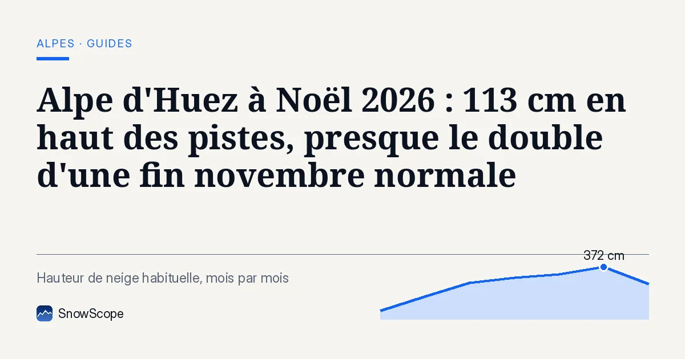

Alpe d'Huez à Noël 2026 : 113 cm en haut des pistes, presque le double d'une fin novembre normale
Oui, l'Alpe d'Huez a toutes les chances d'avoir de la neige à Noël 2026 : le haut du domaine compte 113 cm ce vendredi 27 novembre, et à 2 215 m le manteau atteint 64 cm, contre 33 cm une fin novembre ordinaire. Sur 46 hivers, 87 % avaient plus de 50 cm à cette altitude au 1er janvier.
Consultez les prévisions neige en temps réel pour Alpe d'Huez Grand Domaine sur l'application SnowScopeHauteurs de neige, alertes poudreuse et carte 3D, gratuitement.
Un début d'hiver très enneigé
Les perturbations de la semaine ont apporté 138 cm sur le haut du domaine, dont 45 cm en trois jours. Cela fait de l'Alpe d'Huez l'une des stations les mieux enneigées des Alpes du Nord en ce moment, devant beaucoup de stations de Tarentaise à altitude comparable.
La suite est sèche et froide : pratiquement pas de neige annoncée d'ici début décembre. Le froid conserve le manteau et permet aux enneigeurs de tourner la nuit sur les pistes de retour vers la station.
Ce que disent 46 hivers sur le 25 décembre
Le jour de Noël, la hauteur de neige habituelle est de 84 cm à 2 215 m. Un hiver sur quatre a moins de 51 cm, un sur quatre plus de 99 cm. Le 15 décembre, la valeur habituelle est de 56 cm, et le 1er janvier de 90 cm.
Autrement dit, la station a déjà fin novembre presque autant de neige qu'un Noël normal. Le meilleur hiver de la série, 2019-20, a culminé à 250 cm ; le plus maigre, 2021-22, à 134 cm.
Quel secteur pour les fêtes
Le domaine monte du bas de la vallée jusqu'au Pic Blanc, à 3 306 m, et c'est cette amplitude qui fait sa force : le glacier de Sarenne et le haut des Grandes Rousses gardent une neige d'hiver même pendant un redoux.
Pour une famille, la station elle-même offre un départ skis aux pieds sur la grande majorité des hébergements. Les villages voisins, plus bas, sont plus calmes et moins chers, mais leur retour à skis dépend davantage de la neige de culture en décembre.
Les journées de Noël
Le soleil est l'atout et le piège de l'Alpe d'Huez : ses pistes orientées au sud sont lumineuses mais se transforment vite l'après-midi. Le matin, commencez par les pistes à l'ombre vers le haut du domaine ; l'après-midi, redescendez vers les pistes ensoleillées.
Le 24 et le 25, les pistes sont plus calmes en fin de matinée. Le 26 et le 27 sont parmi les jours les plus chargés de la saison. La page enneigement de l’Alpe d’Huez donne chaque jour la neige en bas, au milieu et en haut du domaine.
Questions fréquentes
La neige va-t-elle tenir jusqu'à Noël ? Il faudrait un mois de douceur et de pluie pour perdre l'avance actuelle. Le manteau à 2 215 m est déjà proche de la valeur habituelle du 25 décembre, et le froid des prochains jours le consolide. Même un décembre sec laisserait le haut du domaine bien enneigé.
Peut-on skier jusqu'en bas ? En décembre, les retours vers les villages du bas dépendent de la neige de culture et des redoux. Sur le plateau de la station et au-dessus, la neige naturelle suffit déjà cette année.
Quand la neige est-elle la plus épaisse ? En général en mars, autour de 154 cm à 2 215 m. Noël est donc le début de la vraie saison, pas son sommet.
Faut-il réserver maintenant ?
Oui, si vous visez la semaine du 19 au 26 décembre : un début de saison aussi enneigé attire les réservations tardives. Les semaines de début décembre restent les moins chères de l'hiver, et cette année elles offrent déjà un enneigement proche de la mi-décembre normale.
Conseils aux skieurs
- Le matin, skiez le haut du domaine et les pistes à l'ombre ; l'après-midi, les pentes au soleil.
- Les équipements spéciaux (pneus hiver ou chaînes) sont obligatoires sur la route des 21 virages en hiver.
- Réservez les cours de ski des enfants avant d'arriver pour la semaine de Noël.
- Pour aller plus loin : notre enneigement de l’Alpe d’Huez sur 46 hivers, à trois altitudes et la page France.
- Comparez d'autres stations pour Noël sur notre page Noël au ski.
À propos de ces chiffres
Chiffres de neige : la carte et la prévision SnowScope du jour, et notre historique de 46 hivers passés pour chaque station (une estimation pour la zone, pas le bulletin de la station).
Bulletins d'avalanche officiels: Météo-France – Bulletin d'estimation du risque d'avalanche
Citer ce bulletin
Pour la recherche, l'enseignement ou la presse : chiffres et graphiques réutilisables librement sous CC BY 4.0 avec cette citation.
SnowScope (2026), Alpe d'Huez à Noël 2026 : 113 cm en haut des pistes, presque le double d'une fin novembre normale, https://snowscope.app/blog/fr/2026/11/alpe-dhuez-noel-2026-neige-assuree-ce-que-disent-46-hivers.html, consulté le 2026-11-27
SnowScope (Atlas Labs). (2026, November 27). Alpe d'Huez à Noël 2026 : 113 cm en haut des pistes, presque le double d'une fin novembre normale. SnowScope snow reports. https://snowscope.app/blog/fr/2026/11/alpe-dhuez-noel-2026-neige-assuree-ce-que-disent-46-hivers.html
BibTeX
@misc{snowscope2026alpedhueznoel2026neigeas,
author = {{SnowScope (Atlas Labs)}},
title = {Alpe d'Huez à Noël 2026 : 113 cm en haut des pistes, presque le double d'une fin novembre normale},
year = {2026},
month = nov,
howpublished = {\url{https://snowscope.app/blog/fr/2026/11/alpe-dhuez-noel-2026-neige-assuree-ce-que-disent-46-hivers.html}},
note = {Published 2026-11-27 20:14 UTC; accessed 2026-11-27}
}· CC BY 4.0 · Méthodes, données et outils →
Suivre Alpe d'Huez Grand Domaine
Gratuit : un message quand la neige arrive, et la météo chaque matin.